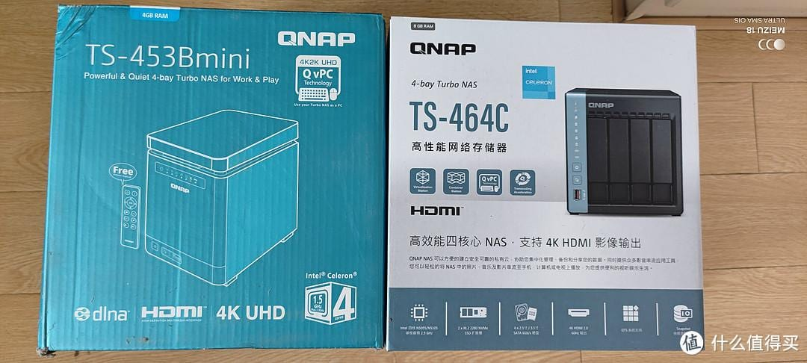

威联通 TS-464C

威联通 4 盘位 x86 NAS，N5095 处理器加双 2.5G 网口，还带 HDMI 4K 输出，硬件规格在同价位突出，适合看重内网速度与多媒体玩法的用户。
客观评测
TS-464C 搭载 Intel Celeron N5095 四核处理器、8GB 内存，提供 4 个热插拔盘位、双 2.5GbE 网口、2 个 M.2 插槽与 PCIe Gen3 扩展槽，并有 HDMI 2.0 接口可 4K 直连显示设备。实测内网传输可跑满 2.5G 网口带宽，Docker 与虚拟机运行流畅，硬件转码应对多路视频播放游刃有余。硬件规格在同价位领先，短板在软件体验的细腻程度。
主观点评
这是台典型的「硬件给足」的机器：接口、网口、扩展槽都比同价位竞品大方，让人有升级万兆的念想。接上电视直接放 4K 片源的感觉也很爽。代价是要花点时间研究 QTS 的设置，折腾过程比群晖费神一些。如果你享受把性能榨干的成就感，它回报你的空间更大。
优点与不足
- 双 2.5G 网口 + PCIe 扩展，硬件上限高
- HDMI 直连电视，可当客厅影音终端
- 同价位硬件规格突出，性价比好
- QTS 系统功能多但上手门槛略高
- 系统细节打磨不如竞品顺滑
- 多媒体刮削与影音体验需自行折腾
参数规格
| 盘位 | 4 个 3.5/2.5 英寸盘位，支持热插拔 |
|---|---|
| CPU | Intel Celeron N5095 四核，主频 2.0GHz（睿频约 2.9GHz） |
| 内存 | 8GB DDR4（可扩展） |
| 网口 | 2 × 2.5GbE（支持聚合） |
| 扩展 | 2 × M.2 PCIe NVMe 插槽、PCIe Gen3 扩展槽（可加万兆卡） |
| 接口 | HDMI 2.0（4K 输出）、USB 3.2 Gen2 ×2、USB 2.0 ×2 |
| 系统 | QTS（支持 Container Station、Virtualization Station） |
| 多媒体 | 硬件转码，可做 HTPC 直连电视 |
| 功耗 | 约 35W（视硬盘配置） |
| 噪音 | 约 23 dB(A)（视硬盘） |